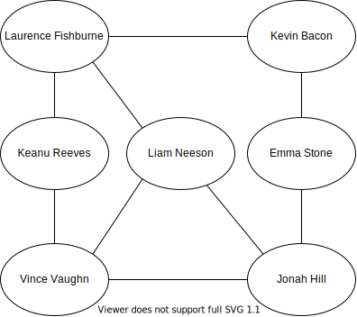

Welcome!
This page is the main page for Graphs: Matrix Representation
This page is the main page for Graphs: Matrix Representation
The next data structure we will introduce is a graph.

Graphs are multidimensional data structures that can represent many different types of data. We can use graphs to represent electronic circuits and wiring, transportation routes, and networks such as the Internet or social groups.
A popular and fun use of graphs is to build connections between people such as Facebook friends or even connections between performers. One example is the parlor game Six Degrees of Kevin Bacon. Players attempt to connect Kevin Bacon to other performers through movie roles in six people or less.

For example, Laurence Fishburne and Kevin Bacon are directly connected via ‘Mystic River’. Keanu Reeves and Kevin Bacon have never performed in the same film, but Keanu Reeves and Laurence Fishburne are connected via ‘The Matrix’. Thus, Keanu and Kevin are connected via Laurence.
In this module we will discuss graphs in more detail and build our own implementation of graphs.
We will discuss some of the basic terminology associated with graphs. Some of this vocabulary should feel familiar from the trees section; trees are a specific type of graph!
Nodes: Node is the general term for a structure which contains an item.
Size: The size of a graph is the number of nodes.Capacity: The capacity of a graph is the maximum number of nodes.Nodes can be, but are not limited to the following examples: - physical locations (IE Manhattan, Topeka, Salina), - computer components (IE CPU, GPU, RAM), or - people (IE Kevin Bacon, Laurence Fishburne, Emma Stone)
Edges: Edges are the connection between two nodes. Depending on the data, edges can represent physical distance, films, cost, and much more.
Adjacent: Node A and node B are said to be adjacent if there is an edge from node A to node B.Neighbors: The neighbors of a node are nodes which are adjacent to the node.Edges can be, but are not limited to: - physical distances, like the distance between cities or wiring between computer components, - cost, like bus fares, and - films, like the Six Degrees of Kevin Bacon example
Cycles: A cycle is a path where the first and last node are the only repeated nodes. More explicitly, this means that we start at node A and are able to end up back at node A.For example, we can translate the Amtrak Train Station Connections into a graph where the edges represent direct train station connections.
^[Generated using the Amtrak system map from 2018. This graph does not include all stations or connections.]
Within this context, we could say that Little Rock and Fort Worth are adjacent. The neighbors of San Antonio are Fort Worth, Los Angeles, and New Orleans. The Amtrak Train Graph has multiple cycles. One of these is Kansas City -> St. Louis -> Chicago -> Kansas City.
While trees are a type of graph, graphs can have more functionality than trees. For example, recall that to be a single tree, there could be no disconnected pieces.
Connectedness: Graphs do not require being fully connected. There can be disconnected portions within a graph. For example, the following graph shows all of the students in a sophomore biology class. There is an edge between two student nodes if they are Facebook friends.Graphs can also have loops. In a tree, this would be like a node being its own parent, which is not an allowable condition.
Loops: Loops are edges which connect a node to itself. These can be useful in depicting graphs that show control flow in programming. In this example, node A is connected to node B and node A is connected to itself.A weighted graph is a graph which has weights associated with the edges. These weights quantify the relationships, so they can represent dollars, minutes, miles, and many other factors which our data may depend upon.
Weights are not limited to physical quantities; they can also be our own defined similarity in text, product types, and anything for which we can create a similarity measure for. Let’s look at concrete weights using the Amtrak example.
We are able to expand the Amtrak graph from the previous page to include approximate distances in miles between cities.
^[Generated using the Amtrak system map from 2018. This graph does not include all stations or connections. Distance was calculated approximately ‘as the crow flies’.]
Now that we have weights defined on our edges, we can compare paths in a different way. When we discussed trees, we just looked at the number of edges it took to get to another node. We can also determine the shortest path between nodes with respect to distance. If we wanted to travel from San Antonio to Kansas City, we may be tempted to travel San Antoinio -> Los Angeles -> Albuquerque -> Kansas City as it has the fewest stops. This trip would take us 2,531 miles (1201+640+690). With the edge weights in mind, a much better route would be San Antonio -> Fort Worth -> Little Rock -> St. Louis -> Kansas City with a total of 1,089 miles(238+320+293+238) traveled.
A directed graph is a graph that has a direction associated with each edge. For example, trees are a directed graph. The edge orientation will imply a fixed direction that we can move about nodes. As with trees, the flat end of the arrow will represent the origin and the arrowhead will represent the destination. If an edge has no arrowheads, then it is assumed that we can traverse both directions.
In the following graph, we have an example distribution network where each store ends up with 5 units in its possession. For example, nine units go from the distribution center to Store A. The distribution center will never receive product from stores as it has no incoming edges.
Unlike trees, directed graphs can have nodes with multiple incoming edges. We can see an example of this at Store B. The distribution center and Store A both send units to Store B.
In directed graphs, we must be cautious on how we define adjacent. For the following, we would say that the source is adjacent to the target. However, the target is not adjacent to the source.
Formally, node A and node B are said to be adjacent if there is an edge from node A to node B.
When discussing directed graphs, we must also talk about undirected graphs. An undirected graph is a graph in which none of the edges have an orientation. If there is at least one directed edge, then it is considered a directed graph.
Undirected Edge: An undirected edge is an edge which has no defined orientation (IE no arrowheads) which implies that we can traverse in either direction. If node A and node B are connected via an undirected edge then we say node A is adjacent to node B and node B is adjacent to node A.For the following undirected edge, we would say that the source is adjacent to the target and the target is adjacent to the source.
Graph types and appearances can vary wildly. We are not limited to just weighted/unweighted or directed/undirected. We can also have combinations of weighted and directed.
In the following graph, we have an example of a weighted and directed map. This map represents a zoo train where each node represents a station and each edge is a part of the track. Zoo guests can get on and off wherever they desire.
This graph is weighted as guests must pay the associated fee for each part of the track. Our example train also has a one way direction in most cases. The exception to this is the entrance/exit to the aquarium, this part of the track can go either direction.
In this graph, we also have a couple of loops. This would allow for zoo-guests to ride the train around an expansive exhibit such as the elephants or giraffes.
One possible way to tour the zoo for a guest starting at the entrance could be: aquarium, primates, big cats, antelope, giraffes, loop around the giraffes, elephants, aquarium, then exit. Their total payment for just the train would be $14.
The first way that we can represent graphs is as matrices. In a matrix representation of a graph, we will have an array with all the nodes and a matrix to depict the edges. The matrix that depicts the edges is called the adjacency matrix.
To build the adjacency matrix, we go through the nodes and edges. If there is an edge with weight w going from i to j, then we put w in the (i,j) spot in our adjacency matrix. If there is no edge from i to j then we put infinity in the spot (i,j). Let’s look at some examples.
An edge that starts at source and ends at target will result in an entry at (source,target) in the adjacency matrix.
For an unweighted graph, we treat the weights as 1 for all edges in our adjacency matrix.
For an undirected edge between nodes i and j, we put an edge from i to j and an edge from j to i.
Suppose that we have the following graph:

Across the top of the following, we have the array of nodes. This give us the index at which each node is located. For example, node A is in spot 1, node B is in spot 2, node C is in spot 3 and so on.
Below that we have the adjacency matrix. For the directed edge with weight 2 that goes from node B to node C, we have the value 2 at (2,3) in the adjacency matrix as B has index 2 and C has index 3. For the directed edge with weight 4 that goes from node A to node F, we have the value 4 at (1,6) in the adjacency matrix as A has index 1 and F has index 6.
Since there is no edge that connects from node A to node B, we have infinity in (1,2).

Now suppose we have this graph. We now have some loops present.

For example, we have a loop on node E with weight 12 so we will put the value 12 in spot (5,5) as E has index 5.

Now suppose we have this graph which is undirected and unweighted.
Since this graph is unweighted, we will treat all edges as though they have weight equal to one. Since this graph is undirected, each edge will essentially show up twice.
For example, for the edge that connects nodes A and B, we will have an entry in our adjacency matrix at (1,2) and (2,1).

nodes: This will keep track of the nodes which are in our graph as well as the node values. The nodes can have any type of value such as numbers, characters, and even other data structures.edges: This will keep track of the edges which are in our graph.size: This will keep track of the number of nodes that are active in our graph.Upon initialization, we will initialize nodes to be an empty array of size capacity, edges to be an empty two-dimensional array with dimensions capacity by capacity and size to be zero as we start with no actual nodes.
get nodes: returns a list of the nodes with their respective indexesfunction GETNODES()
LIST = []
for NODE in NODES
if NODE has a VALUE
append (VALUE, INDEX) to LIST
return LIST
get edges: returns a list of the edges in the format (source, target, weight)function GETEDGES()
LIST = []
for ROW in EDGES
for COL in ROW
VALUE = entry at (ROW,COL)
if VALUE is not infinity
append (ROW,COL,VALUE) to LIST
return LIST
get node: returns the node with the given index. If the index is within the possible range, then we return the value of that node.
find node: returns the index of the given node. We iterate through our nodes and if we find that value, then we return the index. Otherwise, return -1.
get edge: returns the weight of the edge between the given indexes of the source node and target node. If one or both of the indexes are out of range, then we should return infinity.
get capacity: returns the maximum number of nodes we are allowed to have. Upon initialization, we will have a fixed number of possible nodes in our node array. We can simply return the size of this array.
get size: returns the size attribute.
get number of edges: returns the number of edges currently in the graph. We will iterate through our edges and return the number of entries that were not infinity.
get neighbors: returns the neighbors of the given node. We will access our row adjacency matrix that corresponds to the node and return the indexes and values of those entries which are not infinity.
function GETNEIGHBORS(IDX)
if IDX in range of NODES length
LIST = []
ROW = the IDX-th row of EDGES
for J in range 0 to ROW length
VALUE = J-th entry of ROW
if VALUE is not infinity
append (J,VALUE) to LIST
return LIST
add node: will add a node to the graph with the given value if our graph still has room. Procedurally, we will try to put the node in the first empty place we find. To do this, we start with IDX equal to negative one then loop through all of the indexes of the graphs nodes attribute. At each index, we check if that entry is equal to the value we are trying to add. This will check if the value is already in our graph. If there is nothing in that entry and the IDX variable is still negative one, then we will set IDX equal to that index. We continue looping through the nodes attribute until we reach the end. It is possible that there is more than one open space in the nodes attribute. Thus, by checking if IDX is still negative one we can make sure to put value in the first empty spot. Once we finish going through nodes we check to see if we ever found an open spot. If IDX is still negative one, this would indicate that there was no room. Otherwise, we put value into nodes at spot IDX and increment the size.function ADDNODE(VALUE)
IDX = -1
for NODE in NODES
if NODE is VALUE
return NODE's index
if NODE has no entry and IDX is -1
IDX = NODE's index
if IDX is not -1
add VALUE to NODES at position IDX
increment SIZE
return IDX
remove node: will remove a node to the graph with the given value if our graph has the node. We will set the node to be empty and remove any edges that may be attached to it.function REMOVENODE(IDX)
if IDX is in the range of our indexes
if NODES at position IDX is not empty
set NODES at IDX to be empty
decrement SIZE by one
for J in node indexes
set EDGES (J,IDX) equal to infinity
set EDGES (IDX,J) equal to infinity
return true
else
return false
else
return false
add edge: will add an edge with the given weight which goes from the source node to the target nodefunction ADDEDGE(SOURCE, TARGET, WEIGHT)
if SOURCE and TARGET are both in the range of our node indexes
set EDGES(SOURCE, TARGET) equal to WEIGHT
return true
else
return false
remove edge: will remove the edge which goes from the source node to the target nodefunction REMOVEEDGE(SOURCE, TARGET)
if SOURCE and TARGET are both in the range of our node indexes
if EDGES(SOURCE, TARGET) is not equal to infinity
set EDGES(SOURCE, TARGET) equal to infinity
return true
else
return false
else
return false
add undirected edge: will add two edges with the given weight between the two given nodesfunction ADDUNDIRECTEDEDGE(NODE1, NODE2, WEIGHT)
RES = ADDEDGE(NODE1, NODE2, WEIGHT)
RES = RES and ADDEDGE(NODE2, NODE1, WEIGHT)
return RES
remove undirected edge: will remove two edges between the two given nodes. We can utilize the remove edge function on ‘NODE1’ to ‘NODE2’ and then on ‘NODE2’ to ‘NODE1’.function REMOVEUNDIRECTEDEDGE(NODE1, NODE2)
RES = REMOVEEDGE(NODE1, NODE2)
RES = RES and REMOVEEDGE(NODE2, NODE1)
return RES
In this module, we have introduced the graph data structure. We also looked at how we would implement a graph using a matrix representation. We introduced the following new concepts in this module:
Directed Graphs: A directed graph is a graph that has a direction associated with each edge. The flat end of the arrow will represent the origin and the arrowhead will represent the destination. If an edge has no arrowheads, then it is assumed that we can traverse both directions.
Edges: Edges are the connection between two nodes. Depending on the data, edges can represent physical distance, films, cost, and much more.
Adjacent: Node A and node B are said to be adjacent if there is an edge from node A to node B.Neighbors: The neighbors of a node are nodes which are adjacent to the node.Undirected Edge: An undirected edge is an edge which has no defined orientation (IE no arrowheads). If node A and node B are connected via an undirected edge then we say node A is adjacent to node B and node B is adjacent to node A.Loops: Loops are edges which connect a node to itself.
Nodes: Node is the general term for a structure which contains an item.
Size: The size of a graph is the number of nodes.Capacity: The capacity of a graph is the maximum number of nodes.Weighted Graphs: A weighted graph is a graph which has weights associated with the edges. These weights will quantify the relationships so they can represent dollars, minutes, miles, and many other factors which our data may depend on.
In the next module, we will look at a list implementation of graphs and when we might use one implementation over the other.